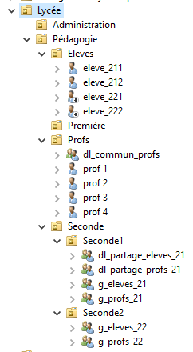
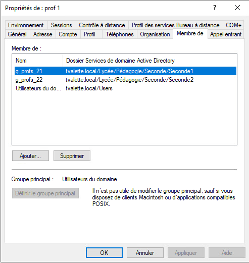

Conférence SecNumEco 2025 Sécurité Numérique et Économique
Objectif de l’événement
Le 25 septembre 2025, notre classe de SIO2 a assisté à la conférence SecNumEco au Parlement de Loire-Atlantique à Nantes. Cet événement, organisé par l’État, la Région Pays de la Loire et la CCI Nantes Saint-Nazaire, avait pour but de sensibiliser les entreprises et les acteurs du numérique aux enjeux de la cybersécurité et de l’économie numérique.
Déroulement de la journée
Nous étions installés dans un grand amphithéâtre pour suivre les différentes présentations. La partie qui m’a le plus marqué concernait le modèle OSINT (Open Source Intelligence), expliquant comment les informations publiques peuvent être utilisées à des fins d’enquête ou de veille en cybersécurité. Même si nous n’avons pas pu participer aux ateliers, notamment au challenge de prompt hacking, la conférence restait très enrichissante.
Image : Architecture du lycée
Figure 1 – Arborescence du domaine (OU, groupes et comptes).
Messages et apprentissages
Selon moi, la conférence s’adressait surtout aux chefs d’entreprise. Elle mettait en avant l’importance de renforcer la cybersécurité en interne, notamment grâce à la sensibilisation et à la formation des équipes informatiques. Cela m’a permis de mieux comprendre la vision des dirigeants face aux enjeux numériques, et de prendre du recul sur notre rôle futur d’informaticien.
Image : Propriétés d’un utilisateur (membres de groupes)
Figure 2 – Exemple d’un compte professeur et de ses appartenances aux groupes.
Bilan
Cette journée a été une bonne occasion de découvrir le monde professionnel sous un autre angle. Même en tant que simples spectateurs, nous avons pu observer comment les décideurs abordent la sécurité numérique et les moyens mis en place pour la protéger. Une expérience formatrice et motivante pour la suite de notre formation SIO.